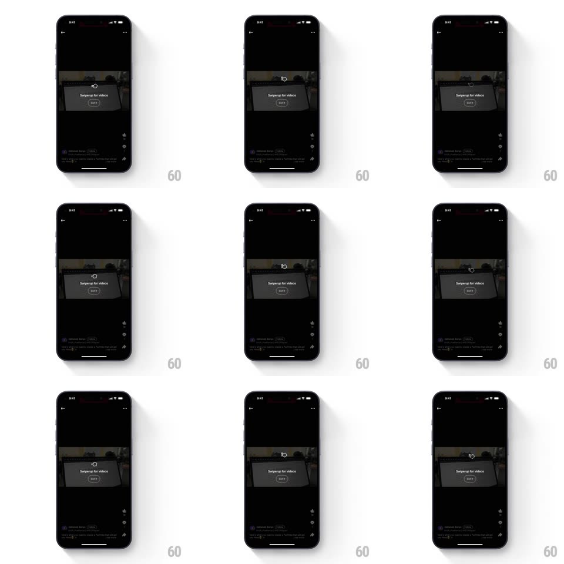

Media
Frame-by-frame

Rebuild this interaction 1:1: LinkedIn's video-feed onboarding tooltip - over the dark immersive video player, a centered card ("Swipe up for videos" with a "Got it" button) sits beneath a looping hand-swipe gesture animation, and tapping Got it dismisses it into the playing video.

Rebuild this interaction 1:1: LinkedIn's video-feed onboarding tooltip - over the dark immersive video player, a centered card ("Swipe up for videos" with a "Got it" button) sits beneath a looping hand-swipe gesture animation, and tapping Got it dismisses it into the playing video.
## Integration
Integration: stack-agnostic spec - springs given as stiffness/damping, timed motions as duration + curve; map every value to your framework and animation library of choice.
## Scene
Dark full-screen video player (video letterboxed top, author row and action rail below). The overlay: a looping hand icon performing an upward swipe above a light card with "Swipe up for videos" and an outlined "Got it" pill.
## Motion spec
Pattern: coach-mark overlay with looping gesture demo.
- Entry: overlay fades in over the paused-feeling player (300ms); the card rises slightly (translateY 12px -> 0, 300ms).
- The hand icon loops the swipe: it starts low, drags upward ~40px while shrinking slightly (scale 1 -> 0.9, "press" state), then releases and fades back to the start (1.6s loop, ease-in-out on the drag, 200ms reset fade).
- A faint circular ripple emits where the hand "releases" (scale 0.5 -> 1.2, opacity 0.4 -> 0, same loop).
- Got it: the card scales down and fades (0.92, 200ms) and the player resumes full brightness.
## Calibration
- The loop reads as press-drag-release, not just an upward float - the shrink on touch-down sells it.
- The video behind stays dimmed (~50%) until dismissal.
## Reduced motion
Static hand icon with an upward arrow; no loop.
## Don't miss
- The hand is a simple outline glyph, not a realistic render.
- "Got it" is a pill with a thin outline - not a filled button.